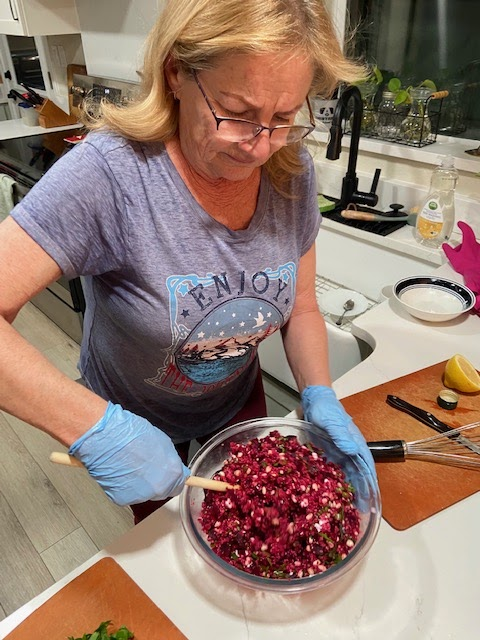

Cyndy made this delish salad for us when we visited a few days ago, along with her wild rice salad. This recipe is super fast if you buy pre-cooked beats, which we get at Trader Joes. Trader Joes also carries a good vegan feta, but of course you could use real feta if you prefer.

Ingredients
- 6 medium roasted beets, chopped
- 1 C dry quinoa + 2 C water
- 1 cup fresh spinach leaves, ribboned
- 3 scallions (green onions), chopped
- 3 oz feta (vegan, from Trader Joes), crumbled on top
- 1/4 C pine nuts (best!) or pumpkin seeds, roasted
Dressing
- 3 T olive oil
- Juice from 1 lemon or lime juice
- Salt and pepper to taste
Instructions
Cook the quinoa: Rinse, add water, cook in the microwave on high 5 minutes, let cool a minute, stir, and cook 2 more minutes. (Or cook in a pot, if you prefer.)
While that’s cooking, chop the beets, spinach, and scallions. (To “ribbon” spinach, put a few leaves together, roll, and cut in the short direction.) Toast the pine nuts on a tray in the oven for a few minutes to make them even tastier.
Mix the dressing. Toss all the ingredients together in a bowl. Serve!
Ribboned spinach:
{kind=link}
Toss!

{kind=link}
Enjoy!
{kind=link}